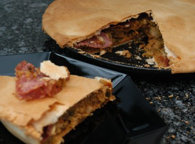

| Zutaten für 4 Personen: | |
| 500 g | Kuchenteig |
| 2 El | Paniermehl |
| 600 g | Wirz |
| 20 g | Butter |
| Salz | |
| Pfeffer | |
| 1 El | Kümmel |
| 1 El | Tomatenpüree |
| 1 dl | Rotwein |
| 150 g | Salamischeiben |
| 3 | Eier |
| 2 dl | Rahm |
| 50 g | geriebener Sbrinz |
| 1 | Eigelb |
2/3 des Teiges auswallen und ein rundes Kuchenblech damit auslegen, mit Paniermehl bestreuen.
Den Wirz fein schneiden und in der Butter andünsten, würzen. Kümmel und Tomatenpüree beigeben und mit dem Rotwein ablöschen. Köcheln bis alle Flüssigkeit verdampft ist.
Ofen auf 200°C vorheizen.
Auf dem Teigboden verteilen und mit Salamischeiben belegen.
Eier, Rahm und Reibkäse verquirlen, würzen und über die Füllung giessen.
Teigrand darüber legen und mit Eigelb bestreichen. Aus dem restlichen Teig einen Deckel auswallen und damit den Kuchen zudecken. Mit Eigelb bestreichen und bei 200°C ca. 45 Minuten backen.
Christmas Recipies of a Magazine
Hat am 20.2.2007 ganz OK geschmeckt. RE
@LINKBACK_TAG@ @WAKELOCK@